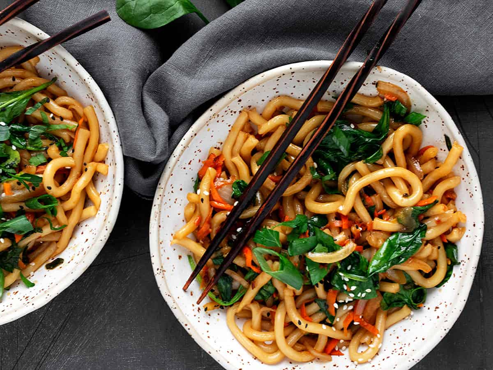

Spicy Udon Stir Fry

15 Minute Spicy Udon Stir Fry
Yes! You can be enjoying this Spicy Udon Stir Fry in just 15 minutes! Endlessly customizable.
Add any vegetables or protein you like.
Proving that delicious doesn't need to be time consuming!
Ingredients
Stir Fry:
- 1 Tbsp vegetable oil, or other neutral cooking oil
- 1/2 medium onion, sliced or diced
- 1 medium carrot, spiralized and chopped or grated
- 1 cup green onion, sliced diagonally (green part only)
- 3 cups baby spinach
- 14 oz soft vacuum-packed udon noodles, or see Notes for other types of udon you can use(400g)
Sauce:
- 1-2 tsp Sambal Oelek, or Asian Chili Garlic Sauce/Sriracha, to taste
- 1/4 cup soy sauce
- 2 tsp rice wine vinegar
- 1 tsp sesame oil
- 2 Tbsp brown sugar
- 2 cloves garlic, minced
- 1 Tbsp fresh ginger, minced
For garnish:
- Sesame seeds
- 1Additional sliced green onion
- 1/4 cup chopped parsley or cilantro
Steps
- Prepare your vegetables and set aside.
Mix up the sauce by combining all the ingredients in a small bowl. Set aside.
If you like, you can fill a large bowl with hot tap water and add udon noodles to the bowl to soak,
so they can be separated before adding to the wok This isn't necessary though,
as you can add fresh udon noodles directly from the package to the wok.
I just find it easier to stir fry them having them separate before the go in to the wok.
- In a large frying pan or wok, heat oil over medium-high heat until very hot.
Add carrots and cook, stirring for a minute or so.
Add onions and cook, stirring, until onions are soft and carrots are tender.
Add green onion and cook, stirring, for 30 seconds or so.
- If soaking udon noodles, gently stir to loosen udon noodles and separate, then drain.
Add drained noodles (or unsoaked noodles)to the wok and cook, stirring, for 30 seconds or so.
(Stir fry a little longer is soaked, to cook off any extra water before adding the sauce).
Add sauce and cook for another 30 second, stirring to combine well.
Scatter baby spinach over top and cook, stirring constantly, until spinach is wilted.
- Remove stir fry to a bowl or plate and garnish with sesame seeds, additional sliced green onion and parsley/cilantro.